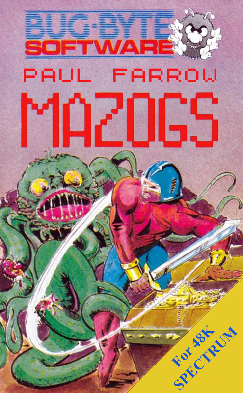
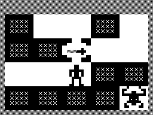

Mazogs


{kind=link}

| Created by: | Paul Farrow |
| Price: | Free |
| Year: | 2016 |
This is a conversion of the classic ZX81 game Mazogs written by Don Priestley and published by Bug-Byte Software Ltd in 1981. It was coded by Paul Farrow, creator of the the superb SPECTRA SCART Interface.

The conversion is not a rewrite of the game but actually uses the original code to deliver an experience as close to the ZX81 version as possible. The conversion requires a Spectrum with at least 48K of RAM. To complete the conversion, a loading screen was added based upon the inlay cover artwork of the ZX81 cassette.
Your quest is to enter a maze to explore it and find the treasure before returning back to your start position. The maze is viewed from above with part of the maze shown on the screen. As you explore you will encounter Mazogs and to defeat them you need to find a sword, you can fight without one but your chances of winning are reduced. A sword can only be used once to fight but there are many swords scattered around the maze. You will also encounter prisoners bricked up in the walls and they will give you a route to the treasure, but the route only appears for ten seconds so you will need to move as quick as you can. A map showing part of the maze can be brought up at any time showing you any Mazogs, prisoners, swords and the treasure if near. Before the start of the game you have three difficulty levels, Try it Out, Face a Challenge and Maniac Mobile Mazogs.